Lord Jesus Walks On The Water
And straightway Jesus constrained his disciples to get into a ship, and to go before him
unto the other side, while he sent the multitudes away.
And when he had sent the multitudes away, he went up into a mountain apart to pray:
and when the evening was come, he was there alone.
But the ship was now in the midst of the sea, tossed with waves: for the wind was contrary.
And in the fourth watch of the night Jesus went unto them, walking on the sea.
And when the disciples saw him walking on the sea, they were troubled, saying, It is a spirit; and they cried out for fear.
But straightway Jesus spake unto them, saying, Be of good cheer; it is I; be not afraid.
And Peter answered him and said, Lord, if it be thou, bid me come unto thee on the water.
And he said, Come. And when Peter was come down out of the ship, he walked on the water, to go to Jesus.
But when he saw the wind boisterous, he was afraid; and beginning to sink, he cried, saying, Lord, save me.
And immediately Jesus stretched forth his hand, and caught him, and said unto him, O thou of little faith, wherefore didst thou doubt?
And when they were come into the ship, the wind ceased.
Then they that were in the ship came and worshipped him, saying, Of a truth thou art the Son of God.
Matthew 14:22-33
- 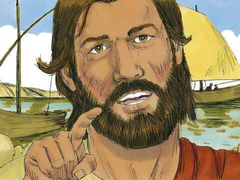
- 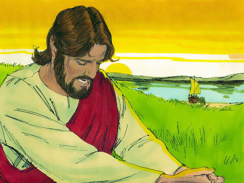
- 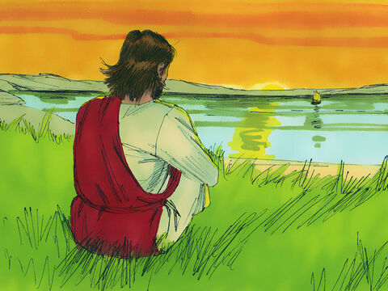
- 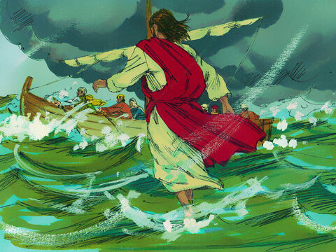
- 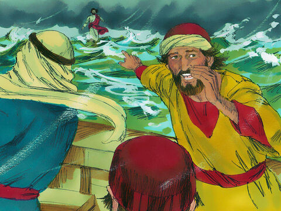
- 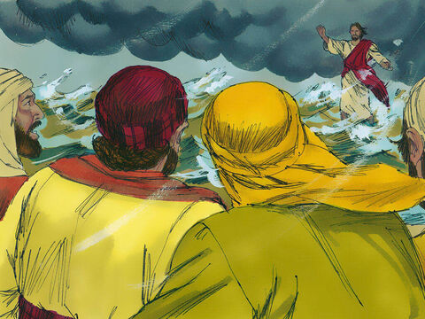
- 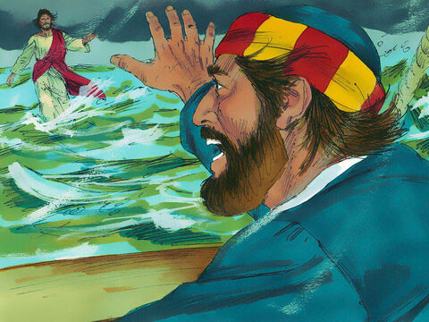
- 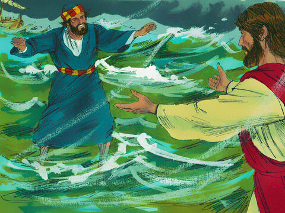
- 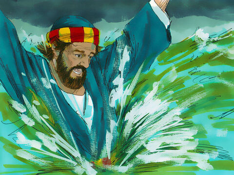
- 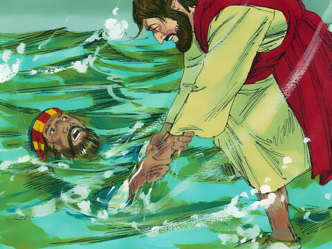
- 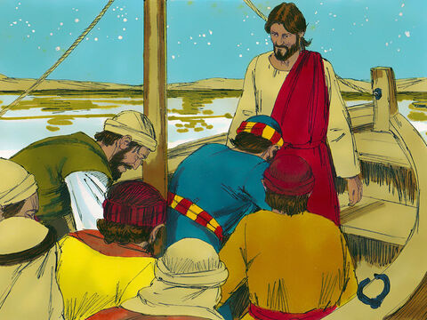
- 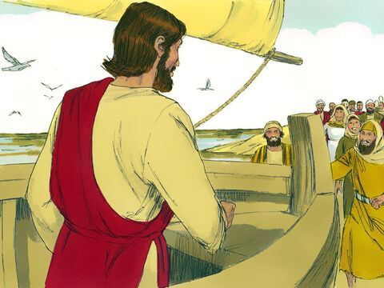